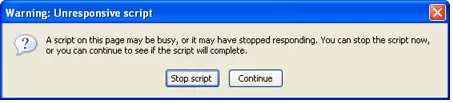

JavaScript API - Web Workers
The concurrency problem
- JavaScript is a single-threaded environment, meaning multiple scripts cannot run
at the same time.
- Script execution happens within a single thread.
- Developers mimic 'concurrency' by using techniques like setTimeout(), setInterval(),
XMLHttpRequest, and event handlers.
- All of these features run asynchronously, but non-blocking doesn't necessarily mean
concurrency
- Asynchronous events are processed after the current executing script has yielded
JavaScript API - Web Workers
A common scenario
-

- Web Workers allow you to do things like fire up long-running scripts to handle computationally
intensive tasks, but without blocking the UI or other scripts to handle user interactions.
JavaScript API - Web Workers
Getting Started with Web Workers
- Workers utilize thread-like message passing to achieve parallelism. They're perfect
for keeping your UI refresh, performant, and responsive for users.
- Web Workers run in an isolated thread
- The code that they execute needs to be contained in a separate file
Create a new Worker object in your main page
var simpleWorker = new Worker('doSomeWork.js');
If the specified file exists, the browser will spawn a new worker thread, which
is downloaded asynchronously. The worker will not begin until the file has completely
downloaded and executed. If the path to your worker returns an 404, the worker will
fail silently.
After creating the worker, start it by calling the postMessage() method:
simpleWorker.postMessage(); // Start the worker.
JavaScript API - Web Workers
Hello WebWorker
- Communication between a work and its parent page is done using an event model and
the postMessage() method.
Main Page
var simpleWorker = new Worker('doSomeWork.js');
simpleWorker.addEventListener('message', function(e) {
console.log('Simple Worker said: ', e.data);
}, false);
simpleWorker.postMessage('Hello World'); // Send data to our worker.
worker file (doSomeWork.js)
self.addEventListener('message', function(e) {
self.postMessage(e.data);
}, false);
JavaScript API - Web Workers
FEATURES AVAILABLE TO WORKERS
Web workers only has access to a subset of JavaScript's features:
- The navigator object
- The location object (read-only)
- XMLHttpRequest
- setTimeout()/clearTimeout() and setInterval()/clearInterval()
- The Application Cache
- Importing external scripts using the importScripts() method
-
Spawning other web workers
Workers do NOT have access to:
- The DOM (it's not thread-safe)
- The window object
- The document object
- The parent object